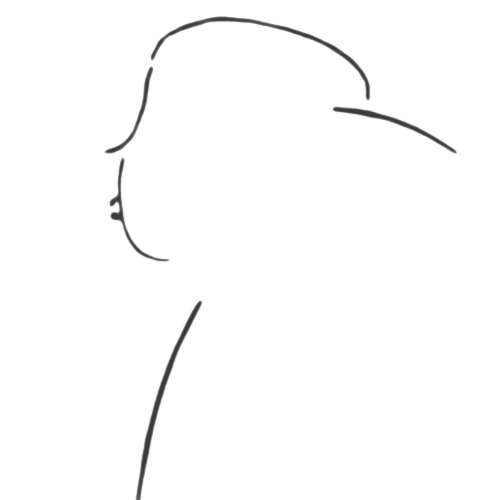

Nixon Records
O składzie:
Nixon Records to grupa raperów założona przez Gdańskiego rapera Nixona MZR 4 listopada 2022 roku.
Raperzy należący do składu wydają swoje utwory pod szyldem Nixon Records promując w ten sposób siebie nawzajem.
Wystąpienia członków Nixon Records jako Nixon Records obejmują głównie wspólne kawałki publikowane później na oficjalnym Soundcloudzie oraz YouTubie grupy.
Pełny skład Nixon Records:
Nixon MZR
Polski raper i beatmaker pochodzący z Gdańska. Założyciel Nixon Records.
Karolek_9590
(Nieaktywny)
Sketuk
Polski raper i beatmaker, Członek Nixon Records
Skajper
(Nieaktywny)
Albumy Nixon MZR
- Nixon Przedstawia (2023)

- Szczery rap (2023)
- Zawrót Głowy (2023)
- Monotematyka (W trakcie tworzenia)
EP/Single Nixon MZR
- N.M.C (2022)
- Zła strona Alfreda Hitchcocka (2023)
- Cena Dobrego Imienia (2023)
- Odp. na 1975-1983 (2023)
Linki:
Nixon Records YouTube -
Kliknij Tutaj!
Nixon Records Discord -
Kliknij Tutaj!
Nixon MZR Facebook -
Kliknij Tutaj!
Nixon MZR Instagram -
Kliknij Tutaj!
Nixon MZR Soundcloud -
Kliknij Tutaj!
Sketuk YouTube -
Kliknij Tutaj!
Sketuk SoundCloud -
Kliknij Tutaj!
Nixon Records SoundCloud -
Kliknij Tutaj!
Info:
Jesteś raperem i chciał byś do nas dołączyć ?
Oto co trzeba zrobić aby zostać członkiem Nixon Records:
Napisz do mnie (Nixon MZR) na Discordzie, Instagramie lub na mailu Nixon Records o chęć dołączenia,
we wiadomości podeślij jakiś swój kawałek, tekst lub bit
a ja po sprawdzeniu materiału zdecyduję o tym czy "egzamin został zdany" i odpiszę na wiadomość :)
Najchętniej przyjmujemy artystów wykonujących takie gatunki rapu jak:
- Oldschool rap
- "Surowy" Newschool (bez autotune z dobrym przekazem)
- Horrorcore (Oldschool)
Oczywiście jeśli nie jesteś raperem to tak samo zapraszamy na nasz serwer discord,
ponieważ mamy tam również specjalne kanały stworzone typowo dla słuchaczy :)
Kontakt: nixon.records@op.pl
---------------------------------------------------------------------------------------------------Nixon Records 2025